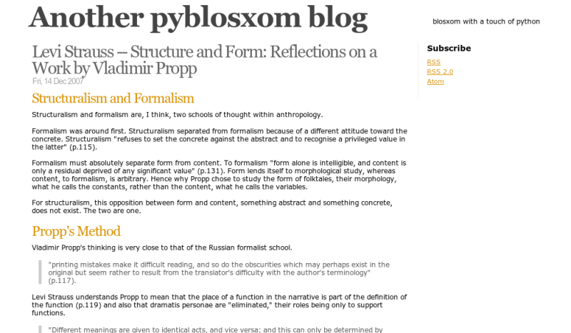

A translation of the blog theme scribbish to pyblosxom. Click on the image to download. The one thing I didn't like about scribbish was its lack of colour, so I added some :) (The CSS is organised so that this can be removed easily.)
Please email any comments, suggestions, improvements to seanh at freeshell dot org.
Scribbish is minimalist in style, easy to modify and features a simple XHTML structure and blog entries formatted according to the hAtom microformat specification.
Scribbish is copyright Jeffrey Hardy under the MIT license.